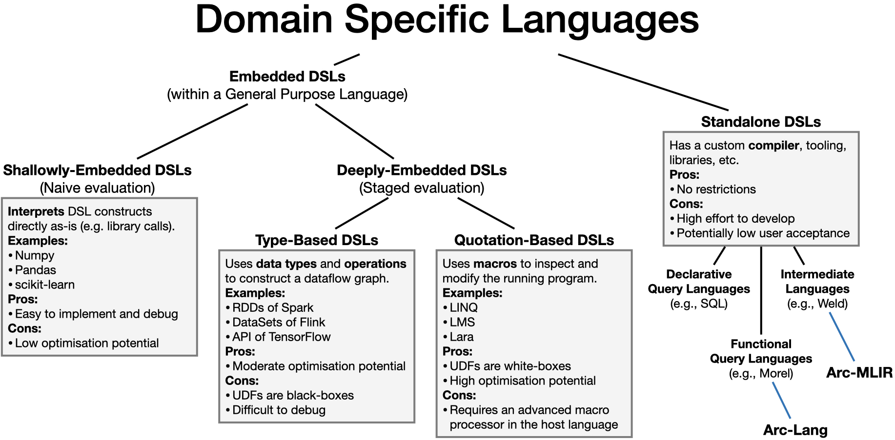

Introduction
Arc-Lang is a programming language for continuous analytics. Continuous analytics is about analyzing data as soon as it is produced and possibly using the results for critical decision-making. Data is generally unstructured (e.g., images, audio, text) or semi-structured (e.g., JSON, XML, CSV), and is produced at a high velocity. Programs for continuous analytics must be able to scale-out their compute and storage while simultaneously execute forever with fault-tolerance.
{{#include ../../arc-lang/examples/wordcount.arc:example}}
The goal of Arc-Lang is to make big-data analytics easy. Arc-Lang targets streaming analytics (i.e., processing data continuously as it is being generated) and batch analytics (i.e., processing data in large chunks all-at-once). From the streaming-perspective, Arc-Lang must be able to manage data at a fine granularity that is generated by many types of sensors, arriving at varying rates, in different formats, sizes, qualities, and possibly out-of-order. Datastreams can in addition be massive in numbers, ranging into the billions, due to the plethora of data sources that have emerged in the recent IoT boom. From the batch-perspective, Arc-Lang must be able to handle different kinds of collection-based data types whose sizes can scale to massive sizes, e.g., tensors and dataframes. Operations should to a large degree be agnostic of the collection type.
{{#include ../../arc-lang/examples/wordcount.arc:polymorphic}}
To cope with the requirements of batch and stream data management, a runtime system is needed which can exploit distributed programming to enable scalability through partitioning and parallelism. Distributed programming is however difficult without abstraction. Application developers must manage problems such as fault tolerance, exactly-once-processing, and coordination while considering tradeoffs in security and efficiency. To this end, distributed systems leverage high-level DSLs which are more friendly towards end-users. DSLs in the form of query languages, frameworks, and libraries allow application developers to focus on domain-specific problems, such as the development of algorithms, and to disregard engineering-related issues. In addition, DSLs that are intermediate languages have been adopted by multiple systems both as a solution to enable reuse by breaking the dependence between the user and runtime, and to enable target-independent optimisation. There is always a tradeoff that must be faced in DSL design. DSLs make some problems easier to solve at the expense of making other problems harder to solve. How a DSL is implemented can also have an impact on its ability to solve problems. DSLs can be categorized as follows:

Approach
In contrast to other DSLs, Arc-Lang is a standalone compiled DSL implemented in OCaml. The idea of Arc-Lang's is to combine general purpose imperative and functional programming over small data with declarative programming over big data. As an example, it should be possible to perform both fine-grained processing over individual data items of a datastream, while also being able to compose pipelines of relational operations through SQL-style queries. Arc-Lang is statically typed for the purpose of performance and safety, but at the same time also inferred and polymorphic to enable ease of use and reuse.
The approach of implementing the language as a standalone DSL allows for more creative freedom in the language design. At the same time, this approach requires everything, including optimisations and libraries, to be implemented from scratch.
To address the issue of optimisation, we are using the MLIR compiler framework to implement Arc-MLIR - an intermediate language - which Arc-Lang programs translate into for optimisations. MLIR defines a universal intermediate language which can be extended with custom dialects. A dialect includes a set of operations, types, type rules, analyses, rewrite rules (to the same dialect), and lowerings (to other dialects). All dialects adhere to the same meta-syntax and meta-semantics which allows them to be interweaved in the same program code. The MLIR framework handles parsing, type checking, line information tracking among other things. Additionally, MLIR provides tooling for testing, parallel compilation, documentation, CLI usage, etc. The plan is to extend Arc-MLIR with custom domain-specific optimisations for the declarative part of Arc-Lang and to capitalize on MLIR's ability to derive general-purpose optimisations such as constant propagation for Arc-Lang's functional and imperative side.
To address the shortcoming of libraries, Arc-Lang allows both types and functions to be defined externally (inside Rust) and imported into the language. Most of the external functionality is encapsulated inside a runtime library named Arc-Sys. Arc-Sys builds on the kompact Component-Actor framework to provide distributed abstractions.
Summary
In summary, Arc-Lang as a whole consists of three parts:
- Arc-Lang: A high-level programming language for big data analytics.
- Arc-MLIR: An intermediate language for optimising Arc-Lang.
- Arc-Sys: A distributed system for executing Arc-Lang.
Getting Started
This section explains how to get started with Arc-Lang.
Prerequisites
The following dependencies are required to build Arc-Lang from source:
- CMake
- Clang
- Ninja
- Rust
macOS
On macOS, dependencies can be installed with:
brew install cmake ninja clang
curl https://sh.rustup.rs -sSf | sh
Ubuntu
On Ubuntu, dependencies can be installed with:
sudo apt install cmake ninja-build clang
curl https://sh.rustup.rs -sSf | sh
Installation
To install Arc-Lang, clone the repo and run the build script:
git clone https://github.com/cda-group/arc/
cd arc
git submodule update --init --recursive
./build
The build script installs the arc command-line utility along with the arc-sys library.
Hello World
Arc-Lang files have the .arc file extension. For example:
# hello-world.arc
def main() = print("Hello World"
)
To execute the above program, run:
arc run hello-world.arc
Tour of Arc-Lang
This section presents a brief tour of Arc-Lang, introducing the basics and unique concepts of the language. The tour assumes you have basic knowledge in some other programming language.
Queries
Arc-Lang allows the formulation of queries over data collections (similar to SQL). This concept is borrowed from Morel which embeds SQL-style queries over relations in StandardML. The following query defines a word-count application.
{{#include ../../../arc-lang/examples/wordcount.arc:example}}
The top-level statements provided by Arc-Lang are:
| Operator | Description |
|---|---|
from | Iterate over data items |
yield | Map data items |
where | Filter data items |
join | Join data items on a common predicate |
group | Group data items by a key |
window | Sliding or tumbling window |
compute | Aggregate data items |
reduce | Rolling aggregate data items |
sort | Sort data items |
split | Split data items into distinct collections |
The exact syntax of these statements is described here.
Query expressions
A query in Arc-Lang is a type of expression that takes data collections as operands and evaluates into a data collection as output. A data collection could either be a finite dataframe or an infinite datastream. Queries begin with the from keyword and are followed by a set of statements. The from statement can in of itself be used to compute the cross product between collections.
val a = [1
,2
];
val b = [3
];
val c = from x in a, y in b;
# Equivalent to:
# val c = a.flatmap(fun(x) = b.map(fun(y) = {x:x,y:y}));
assert(c == [{x:1
,y:3
},{x:2
,y:3
}]);
Projection
The yield clause can be used to project elements
val a = [[[0
,1
]],[[2
,3
]],[[4
,5
]]];
val b = from x in a, y in x yield y+1
;
# Equivalent to:
# val b = a.flatmap(fun(x) = x.map(fun(y) = {x:x,y:y}))
# .map(fun(r) = r.y + 1
);
assert(b == [1
,2
,3
,4
,5
,6
]);
Selection
The where clause can be used for retaining elements which satisfy a predicate.
val a = [0
,1
,2
,3
,4
];
val b = from x in a where x % 2
== 0
;
# Equivalent to:
# val b = a.filter(fun(x) = x % 2
== 0
);
assert(a, [0
,2
,4
]);
Any kind of expression can be used as a predicate, as long as it evaluates into a boolean value.
Ordering
The order clause can be used to sort elements according to a comparison function. By default, sorting is ascending.
val a = [3
,1
,2
,4
,0
];
val b = [{k:3
,v:3
},{k:1
,v:2
},{k:2
,v:9
},{k:4
,v:1
},{k:0
,v:3
}];
val c = from x in a order x;
val d = from x in a order x desc;
val e = from x in a order x with fun(x,y) = x <= y;
val f = from x in a order x on x.k;
# Equivalent to:
# val c = x._sort(fun(x) = x);
# val d = x._sort(fun(x) = x, _desc: Order::Descending);
# val e = x._sort(fun(x) = x, _compare: fun(x,y) = x <= y);
# val f = x._sort(fun(x) = x, _on: fun(x) = x.k);
assert(c == [0
,1
,2
,3
,4
]);
assert(d == [4
,3
,2
,1
,0
]);
assert(e == [0
,1
,2
,3
,4
]);
assert(f == [{k:0
,v:3
},{k:1
,v:2
},{k:2
,v:9
},{k:3
,v:3
},{k:4
,v:1
}];
Streams cannot be sorted since sorting requires that the input is finite.
Aggregating
The compute clause can be used to aggregate values.
val a = [1
,2
,3
];
val b = [{v:1
},{v:2
},{v:3
}];
val c = from x in a compute sum;
val d = from x in b compute sum of x.v;
# Equivalent to:
# val c = a._compute(sum);
# val d = a._compute(sum, _of: fun(x) = x.v);
assert(c == {sum:6
});
assert(d == {sum:6
});
Aggregation is only allowed on finite-sized data collections.
Rolling Aggregates
The reduce clause can be used to compute rolling aggregates.
val a = [1
,2
,3
];
val c = from x in a reduce sum;
# Equivalent to:
# val c = a._reduce(sum);
assert(c == [{sum:1
}, {sum:3
}, {sum:6
}]);
Rolling aggregates are allowed on both finite- and infinite-sized data collections.
Custom Aggregators
It is possible to define custom aggregators that can be used inside compute clauses. The sum, count, and average aggregators are monoids:
val count = Aggregator::Monoid({
lift: fun(x) = {count: 1
},
identity: fun() = {count: 0
},
merge: fun(x,y) = {count: x.count+y.count},
lower: fun(x) = x,
});
val sum = Aggregator::Monoid({
lift: fun(x) = {sum: x},
identity: fun() = {sum: 0
},
merge: fun(x,y) = {sum: x.sum+y.sum},
lower: fun(x) = x,
});
val average = Aggregator::Monoid({
lift: fun(x) = {sum: x, count: 1
},
identity: fun() = {sum: 0
, count: 0
},
merge: fun(x,y) = {sum: x.sum+y.sum, count: x.count+y.count},
lower: fun(x) = {average: x.sum/x.count},
});
Aggregators that operate on the whole input such as median are holistic:
val median = Aggregator::Holistic(
fun(v) = {
val n = v.len();
if n % 2
== 0
{
(v[n/2
] + v[n/2
+1
])/2
} else {
v[n/2
+1
]
}
}
);
Grouping
The group clause can be used to group elements by key into partitions. After grouping, it is possible to apply a partition-wise transformation.
val a = [{k:1
,v:2
}, {k:2
,v:2
}, {k:2
,v:2
}];
val b = from x in a group x.k;
val c = from x in a group x.k compute average of x.v;
# Equivalent to:
# val b = a._group(fun(x) = x.k);
# val d = a._group(fun(x) = x.k, _compute: sum, _of: fun(v) = x.v);
assert(b == [{k:1
,v:[2
]},{k:2
,v:[2
,2
]}]);
assert(d == [{k:1
,sum:2
},{k:2
,sum:4
}]);
Windowing
The window clause can be used to slice data collections into multiple, possibly overlapping, partitions. Like group, a transformation can be applied per-partition. The after clause starts the window at an offset, and the every clause specifies the slide of a sliding window.
val a = [{t:2022
-01
-01T00:00
:01
,v:1
}, {t:2022
-01
-01T00:00
:04
,v:2
}, {t:2022
-01
-01T00:00
:09
,v:3
}];
val b = from x in a window 5s on x.t;
val e = from x in a window 5s on x.t compute count;
val c = from x in a window 5s on x.t after 00
:00
:02
;
val d = from x in a window 5s on x.t every 3s;
# Equivalent to:
# val b = a._window(_length: 5s);
# val b = a._window(_length: 5s, _on: fun(x): x.t, _compute: count);
# val c = a._window(_length: 5s, _on: fun(x): x.t, _after: 2020
-01
-01T00:00
:02
);
# val d = a._window(_length: 5s, _on: fun(x): x.t, _every: 3s);
assert(b == [{t:2020
-01
-01T00:00
:05
,v:[1
,2
]}, {t:2020
-01
-01T00:00
:10
,v:[3
]}]);
assert(e == [{t:2020
-01
-01T00:00
:05
,count:2
}, {t:2020
-01
-01T00:00
:10
,count:1
}]);
assert(c == [{t:2020
-01
-01T00:00
:07
,v:[1
,2
]}, {t:2020
-01
-01T00:00
:12
,v:[3
]}]);
assert(d == [{t:2020
-01
-01T00:00
:05
,v:[1
,2
]}, {t:2020
-01
-01T00:00
:08
,v:[2
]}, {t:2020
-01
-01T00:00
:11
,v:[3
]}]);
Joining
The join clause can be used to join multiple data collections together whose records satisfy a common predicate. It is logically equivalent to a Cartesian-product between the two collections followed by a selection.
val a = [{id:0
,name:"Tim"
}, {id:1
,name:"Bob"
}];
val b = [{id:0
,age:30
}, {id:1
,age:100
}];
val c = from x in a join y in b on x.id == y.id;
# Equivalent to
# val c = a._join(b, fun(x,y) = x.id == y.id);
assert(c == [{a:{id:0
,name:"Tim"
},b:{id:0
,age:30
}}, {a:{id:1
,name:"Bob"
},b:{id:1
,age:100
}}]);
Windowed Joins
Joins require at least one of their input collections to be finite. A join operation over two streams must be followed by a window operation.
val a = [{id:0
,name:"Tim"
,t:2020
-01
-01T00:00
:01
}, {id:1
,name:"Bob"
,t:2020
-01
-01T00:00
:09
}];
val b = [{id:0
,age:30
,t:2020
-01
-01T00:00
:02
}, {id:1
,age:100
,t:2020
-01
-01T00:00
:04
}];
val c =
from x in a
join y in b on x.id == y.id
window 5s on x.t, y.t;
assert(c == [{a:{id:0
,name:"Tim"
,t:2020
-01
-01T00:00
:01
}, b:{id:0
,age:30
,t:2020
-01
-01T00:00
:02
}}]);
Splitting
The split operator can be used to split a collection into two collections.
val a = [Ok(1
), Err(2
), Ok(3
)];
val (b, c) = from a split error;
val (d, e) = from a split with fun(x) = match x {
Ok(v) => Either::L(v),
Err(v) => Either::R(v),
};
# Equivalent to:
# val (b, c) = a._split(_with: split_error);
# val (d, e) = a._split(_with: fun(x) = match x {
# Ok(v) => Either::L(v),
# Err(v) => Either::R(v),
# });
assert(b == [1
, 3
] and c == [2
]);
assert(d == [1
, 3
] and e == [2
]);
Examples
In this section we describe examples of how to use Arc-Lang.
Word Count
Word count is a simple way to count the number of words in a text. The code for calculating a wordcount is as follows.
{{#include ../../../arc-lang/examples/wordcount.arc:example}}
TF-IDF
The formula that is used to compute tf-idf is defined as follows:
tf-idf(t, d) = tf(t, d) * idf(t)tis a termdis a document in a document setidf(t) = log [n/df(t)] + 1is the inverse document frequencynis the total number of documents in the document setdf(t)is the document frequency oft- i.e., number of documents containing the term
t
- i.e., number of documents containing the term
tf(t, d)is the term frequency oftind- i.e., number of occurrences of the term
twithin the documentd
- i.e., number of occurrences of the term
1is added so that terms which occur in all documents will not be entirely ignored.
Sensor Data Aggregation
Deduplication
A common problem in data intensive computing is to deduplicate events of data streams [kleppmann-2017]. As an example, a login system must ensure that all usernames uniquely identify user accounts. This can be implemented as follows.
{{#include ../../../arc-lang/examples/deduplication.arc:example}}
Fraud Detection
This problem is about identifying fraudulent transactions.
Credit card fraud is a growing concern in the digital age. Criminals steal credit card numbers by running scams or hacking into insecure systems. Stolen numbers are tested by making one or more small purchases, often for a dollar or less. If that works, they then make more significant purchases to get items they can sell or keep for themselves. Flink Tutorial.
{{#include ../../../arc-lang/examples/fraud-detection.arc:example}}
Command Line Interface
Language Reference
The syntax of Arc-Lang is formalized using a Regex-based variation of the BNF grammar where:
+and*denote repetition.?is for optional rules.()indicates grouping.|is for alternation.[]for is character-alternation (e.g.,[abc]).-is for ranges (e.g.,[a-zA-Z])..is for matching any character.\is for escaping characters.- Non-terminals are written as uppercase (e.g.,
Expr). - Terminals are written in blue text (e.g.,
Programs
An Arc-Lang program is a sequence of items. Programs start their execution from a main function.
Program ::= Item*Source files are suffixed with the .arc file extension.
Examples
{{#include ../../../arc-lang/examples/program.arc:example}}
Names
A name is a symbolic identifier which can be assigned to a variable or item.
Name ::= [a-zA-Z_][a-zA-Z_0-9]*Examples
{{#include ../../../arc-lang/examples/names.arc:example}}
Paths
A path is a list of names which point to an item in the module hierarchy.
Path ::= ::? Name::* NamePaths can be both relative and absolute. Absolute paths are absolute with respect to the root of the module hierarchy. Relative paths are relative with respect to the current namespace.
mod1::mod2::MyItem # Relative path
::mod1::mod2::MyItem # Absolute path
Examples
{{#include ../../../arc-lang/examples/paths.arc:example}}
Values
A value is the result of evaluating an expression.
Value ::=
| { (Name : Value),+ } Record-value
| ( Value,+ ) Tuple-value
| fun ( (Pattern : Type),+ ) : Expr Lambda-value
| Value? .. (=? Value)? Range-value
| Path Item-value
| Path ( Value ) Enum-value
| Literal
Literal ::=
| true | false Literal boolean
| unit Literal unit
| '[^']' Literal character
| "[^"]*" Literal string
| [1-9][0-9]*Name? Literal integer with optional suffix
| [1-9][0-9]*.[0-9]*Name? Literal floating point with optional suffix
| DateTime
| Duration
DateTime ::=
| [0-9]+-[0-9]+-[0-9]+ Date
| [0-9]+-[0-9]+-[0-9]+T[0-9]+:[0-9]+:[0-9]+ Date + Time
| [0-9]+-[0-9]+-[0-9]+T[0-9]+:[0-9]+:[0-9]+(+|-)[0-9]+:[0-9]+ Date + Time + Zone
Duration ::=
| [0-9]+ns Nanosecond
| [0-9]+us Microsecond
| [0-9]+ms Millisecond
| [0-9]+s Second
| [0-9]+m Minute
| [0-9]+h Hour
| [0-9]+d Day
| [0-9]+w WeekExamples
Some examples of different values:
{{#include ../../../arc-lang/examples/values.arc:example}}
Types
All expressions in Arc-Lang have a statically inferred data type. Types of items and variables can be inferred, and thus do not need to be annotated unless desired.
Type ::=
| { (Name : Type),* (| Type)? } Record-type
| < (Name : Type),* (| Type)? > Enum-type
| ( Type,* ) Tuple-type
| fun ( Type,* ) : Type (~ Effects)? Function-type (with optional effects)
| [ Type ] Array-type
| Type ? Option-type
| Path ([ Type,+ ])? Nominal-type (with optional type parameters)Examples
Some examples of different types:
{{#include ../../../arc-lang/examples/types.arc:example}}
Standard types
The following types are provided in the standard library of Arc-Lang:
Nominal types
Nominal types are context-sensitive. They could either be type aliases, extern types, or generics.
Effects
Blocks
A block is a sequence of statements optionally terminated by an expression which the block evaluates into. If no expression is specified, then the block evaluates into unit.
Block ::= { Stmt* Expr? }Examples
Expression-blocks are represented by the do keyword.
{{#include ../../../arc-lang/examples/blocks.arc:example}}
Statements
A statement is either a variable assignment or an expression whose result is ignored.
Stmt ::=
| ;
| Expr ;
| AssignExpressions
An expression is syntactic construct which can be evaluated into a value.
Expr ::=
| Name Variable reference
| Path (:: TypeArgs) Item reference
| Value Value literal
| Query Queries
| _ Placeholder
| new Name (: Expr)? Variant-construction
| { ExprRecordField,* (| Expr)? } Record-construction
| dyn { ExprRecordField,* (| Expr)? } Dynamically-typed record
| [ Expr,* (| Expr)? ] Array-construction
| Expr? .. (=? Expr)? Range-construction
| fun Params (: Type)? = Expr Lambda-function construction
| Expr BinOp Expr Binary operation
| Expr UnOp Unary operator
| Expr ( Expr,* ) Function call
| Expr . Name Field projection
| Expr . [0-9]+ Index projection
| Expr . { Name,+ } Fields projection
| Expr . ( ([0-9]+),+ ) Indexes projection
| Expr : Type Type annotated
| if Expr Block (else Block)? If-else-expression
| match Expr Arms Match-expression
| for Pattern in Expr Block For-loop
| while Expr Block While-loop
| loop Block Infinite loop
| break Expr? | continue | return Expr? Jumps
| try Expr catch Arms (finally Expr)? Exceptions
UnOp ::=
| - Arithmetic negation
| not Logical negation
BinOp ::=
| + | - | * | / | ** | % Arithmetic
| == | != | < | > | <= | >= Equality and comparison
| and | or | xor | band | bor | bxor Logical and bitwise
| in | not in Contains
ExprRecordField ::=
| Name : Expr
| Expr
| Expr . NameOperators
Operators are defined as follows, with precedence from highest to lowest:
| Operator | Arity | Affix | Associativity | Overloadable? |
|---|---|---|---|---|
return break | Unary | Prefix* | No | |
fun task on | Unary | Prefix | No | |
= ! += -= %= *= /= **= | Binary | Infix | None | No |
in not in | Binary | Infix | Left | No |
.. ..= | Binary | Infix | None | No |
and or xor bor band bxor | Binary | Infix | Left | Yes |
== != | Binary | Infix | None | No |
< > <= >= | Binary | Infix | None | No |
- + % | Binary | Infix | Left | Yes |
* / | Binary | Infix | Left | Yes |
** | Binary | Infix | Right | Yes |
not - | Unary | Prefix | Yes | |
as | Binary | Infix | Left | No |
(exprs) [exprs] | Unary | Postfix | No | |
.index .name .name(exprs) .name[exprs] | Unary | Postfix | No | |
| Primary expressions | Nullary | No |
(*) Operand is optional.
Builtin Functions
The builtin functions of Arc-Lang are listed here.
Examples
Basic function calls
{{#include ../../../arc-lang/examples/basic.arc:example}}
Lambda functions
{{#include ../../../arc-lang/examples/lambda.arc:example}}
Binary operators
{{#include ../../../arc-lang/examples/binops.arc:example}}
Placeholders
An expression-argument such as _ + _ desugars into a lambda function fun(x0, x1): x0 + x1
{{#include ../../../arc-lang/examples/placeholder.arc:example}}
Binary operator lifting
Binary operators can be lifted into functions.
{{#include ../../../arc-lang/examples/binopref.arc:example}}
String interpolation
String interpolation is supported using the $ and ${} syntax.
{{#include ../../../arc-lang/examples/interpolate.arc:example}}
Query
{{#include ../../../arc-lang/examples/query.arc:implicit}}
Patterns
Patterns can be used to deconstruct values and bind their constituents with variables.
Pattern ::=
| Name Variable binding
| Value Value comparison
| Pattern : Type Type annotated
| case Path Pattern? Variant deconstruction
| { (Name (: Pattern)?),* } Record deconstruction
| ( Pattern , Pattern,* ) Tuple deconstruction
| Pattern? .. (=? Pattern)? Range deconstruction
| Pattern or Pattern AlternationExamples
Tuples
{{#include ../../../arc-lang/examples/tuples.arc:patterns}}
Records
{{#include ../../../arc-lang/examples/records.arc:patterns}}
Enums
{{#include ../../../arc-lang/examples/enums.arc:patterns}}
Arrays
{{#include ../../../arc-lang/examples/arrays.arc:patterns}}
Queries
Query ::= from (Pattern in Expr),+ { QueryStmt+ }
QueryStmt ::=
| select Expr (as Name)? Select
| where Expr Filter
| join (Pattern in Expr),+ on Expr Join
| group Expr,+ (as Name)? Partition
| compute Expr (of Expr)? (as Name)? Aggregation
| order Expr desc? Ordering
| window Expr as Name { WindowLogic+ } Window
| into Expr Piping
WindowLogic ::= WindowKind compute Expr (of Expr)? (as Name)?
WindowKind ::=
| length Expr (step Expr)? Tumbling and sliding window
| count Expr Count windowItems
An item is a named top-level definition which can be referenced by path. The ordering of how items are defined in the source code insignificant. Items can be prefixed by annotations for configuration.
Item ::=
| Annots? Global Global immutable value
| Annots? Def Function definition
| Annots? TypeAlias Type alias
| Annots? ExternDef Extern function declaration
| Annots? ExternType Extern type declaration
| Annots? Use Import
| Annots? Module Module
| Annots? Query QueryType Aliases
A type alias is a purely cosmetic alias of a type.
TypeAlias ::= type Name Generics? = Type Where? ;Example
The following code defines type aliases for representing lines on a two-dimensional plane, and a function for calculating the length of a line.
{{#include ../../../arc-lang/examples/type-alias.arc:example}}
Type Classes
Type classes are written with the class keyword.
TypeClass ::= class Name Generics? { Decl,+ }
Decl ::= def Name Generics? ( Type,+ ) ;Examples
{{#include ../../../arc-lang/examples/type-class.arc:class}}
Type Class Instances
Type class instances are written with the instance keyword.
Instance ::= instance Generics Path TypeArgs? Where? { Def,+ }Examples
{{#include ../../../arc-lang/examples/type-class.arc:instance}}
Extern Functions
An extern function is a function-declaration whose implementation is defined externally, outside of Arc-Lang, inside Rust. Extern functions can be annotated with effects that indicate side effects that occur when they are called.
ExternDef ::= extern def Name Generics? ( Type,* ) : Type (~ Effects)? Where? ;Examples
{{#include ../../../arc-lang/stdlib/std.arc:string}}
Extern types
An extern type is an abstract data type with methods whose implementations are defined in Rust.
ExternType ::= extern type Name Generics? Where? ;Example
The following code shows how to define an extern type String in arc-lang.
{{#include ../../../arc-lang/stdlib/std.arc:array}}
Uses
A use-item imports a name into the current namespace and optionally aliases it.
Use ::= use Path (as Name)?;Examples
The following code creates a Person-type and an alias and use it as a Human.
{{#include ../../../arc-lang/examples/uses.arc:example}}
Modules
A module is a named unit of encapsulation which may contain items and other modules.
Module ::= mod Name { Item* }A currently unsupported but planned feature is to allow modules to form a hierarchy through nesting. This hierarchy is in addition tied to the file system hierarchy (similar to Rust):
my-project/
src/
main.arc # :: (root module)
foo/
mod.arc # ::foo
bar/
mod.arc # ::foo::bar
baz/
mod.arc # ::foo::baz
Examples
{{#include ../../../arc-lang/examples/modules.arc:example}}
Body
The body of a function or task can be written either inline using = syntax or directly as a block.
Body ::=
| = Expr ;
| BlockExamples
{{#include ../../../arc-lang/examples/body.arc:example}}
Arms
Arms are used for conditional branching inside match and try expressions.
Arms ::= { Arm,* }
Arm ::=
| Expr (if Expr)? => ExprSinks
Sinks are named parameters into which tasks can emit their output.
Sinks ::= ( Sink,+ )
Sink ::= Name (: Type)?Parameters
Parameters are used in function and task definitions.
Params ::= ( Param,+ )
Param ::= PatternExamples
{{#include ../../../arc-lang/examples/params.arc:example}}
Generics
Items can be parameterised by generic types. Generics can in addition be bounded by type class constraints using a where clause.
Generics ::= [ Generic,+ ]
Generic ::= NameExamples
Explicit generic function
{{#include ../../../arc-lang/examples/generic-function.arc:example}}
Inferred generic function
{{#include ../../../arc-lang/examples/inferred.arc:example}}
Type Arguments
Type arguments use bracket-syntax as separators.
TypeArgs ::= [ Type,+ ]Assignments
Variables can be assigned as mutable with var and immutable with val.
Assign ::=
| val Pattern (: Type)? = Expr ;
| var Name (: Type)? = Expr ;Examples
{{#include ../../../arc-lang/examples/assign.arc:example}}
Annotations
Annotations can optionally be attached to items.
Annots ::= @ { Annot,* }
Annot ::= Name (: Value)?Examples
{{#include ../../../arc-lang/stdlib/std.arc:unit}}
Standard library
The standard library is defined in includes
Strings
Arrays
An array is a collection of values which are stored contiguously.
Arrays are indexable, and may grow and shrink in size. The functions supported for arrays are listed as follows:
Syntactic sugar
{{#include ../../../arc-lang/examples/arrays.arc:example}}
DataFrames
DataFrames store data in rows and columns, where cells are scalars. The idea in Arc-Lang is to build up DataFrames incrementally.
extern type DataFrame;
extern def df(): DataFrame;
extern def append[T: BaseRow](DataFrame, T);
extern def head(DataFrame, i32): DataFrame;
extern def tail(DataFrame, i32): DataFrame;
extern def take(DataFrame, i32): DataFrame;
extern def join(DataFrame, DataFrame, [String], [String]): DataFrame;
val df = DataFrame(
{name: "John"
, age: 30
, city: "New York"
},
{name: "Jane"
, age: 22
, city: "San Francisco"
},
{name: "Joe"
, age: 49
, city: "Boston"
},
{name: "Jill"
, age: 35
, city: "New York"
},
);
df.append({name: "Mary"
, age: 12
});
val df = DataFrame({
"name"
: ["John"
, "Jane"
, "Joe"
, "Jill"
],
"age"
: [30
, 22
, 49
, 35
],
"city"
: ["New York"
, "San Francisco"
, "Boston"
, "New York"
]}
);
df.append({"name"
: "Mary"
, "age"
: 12
});
extern type Series;
extern def df(data: Array[Series]?): DataFrame;
extern def series[T: Scalar](name: String, data: Array[T]);
extern def Series[T: Scalar](name: String, values: Array[T]): Series;
extern def __index__(df: DataFrame, col: i32): Array[String];
extern def ds(): DataSet;
extern def append[T](DataSet[T], T);
extern def head[T](DataSet[T], i32): DataSet[T];
extern def tail[T](DataSet[T], i32): DataSet[T];
extern def take[T](DataSet[T], i32): DataSet[T];
extern def join_df[A, B](DataSet[A], DataSet[B], [String], [String]): DataSet[A ++ B];
A series is a named one-dimensional array of data representing a column in a DataFrame.
val obj = {"name"
: "John"
, "age"
: 30
, "city"
: "New York"
};
val name = obj["name"
];
Channels
Development
Below are instructions for setting up a custom runner, running in a Docker container, for GitHub actions.
# Setup docker
docker pull ubuntu:latest
docker run -i -t ubuntu:latest /bin/bash
# Setup user
passwd # change root password
adduser arc-runner sudo
su -l arc-runner
# Install apt dependencies
sudo apt install software-properties-common
sudo add-apt-repository ppa:git-core/ppa -y
sudo apt update && apt upgrade -y
sudo apt install -y git vim curl z3 libz3-dev curl libssl-dev gcc pkg-config make ninja-build zip openjdk-8-jdk software-properties-common texlive-xetex latexmk gettext ccache cmake
sudo ln -s /usr/bin/clang-16 /usr/local/bin/clang
sudo ln -s /usr/bin/clang++-16 /usr/local/bin/clang
# Install Rust
curl https://sh.rustup.rs -sSf | sh
source $HOME/.cargo/env
echo 'source $HOME/.cargo/env' >> ~/.bashrc
cargo install mdbook
# Install GitHub Actions Runner
# Follow this tutorial (Which generates a unique token):
# https://github.com/cda-group/arc/settings/actions/runners/new?arch=x64&os=linux
# Setup Runner
./run.sh &
disown <PID>
# To exit the container: <C-p><C-q>
# [OPTIONAL] Check that everything builds
cd ~
git clone https://github.com/cda-group/arc
cd ~/arc
git checkout mlir
git submodule update --init --recursive
# Check if arc-lang builds
cd ~/arc/arc-lang
cargo check --all-features --tests --bins --examples --benches
# Check if arc-mlir builds
cd ~/arc/arc-mlir/
./arc-mlir-build
Arc-Lang Reference
Language Reference
This section gives a definition of Arc-MLIR's grammar.
Programs
Program ::= mod Path { Item,* }Names
A name is a symbolic identifier which can be assigned to a variable or item.
Name ::= [a-zA-Z_][a-zA-Z_0-9]*Operations
This section describes the operations of Arc-MLIR.
Operation ::=
| Arc
| Std
| Deprecated
Arc ::=
| arc.keep ( Value ) : ( Type ) -> ()
| arc.tan Value : Type
| arc.acos Value : Type
| arc.asin Value : Type
| arc.cosh Value : Type
| arc.sinh Value : Type
| arc.erf Value : Type
| arc.make_struct ( Value,* : Type,* ) : Type
| arc.make_enum Value ( Value : Type ) : Type
| arc.if ( Value ) ( Block, Block )
| arc.loop.break ( Value,+ ) : ( Type,+ ) -> ()
| arc.adt_constant String : Type
| arc.constant Literal : Type
| arc.cmpi Cmp, Value, Value : Type
| arc.receive ( Value ) : ( Type ) -> Type
| arc.select Value, Value, Value : Type
| arc.send ( Value, Value ) -> ()
| arc.enum_access String in ( Value : Type ) : Type
| arc.enum_check ( Value : Type ) is String : Type
| arc.struct_access ( Value ) { field = String } : ( Type ) -> Type
| arc.addi Value, Value : Type
| arc.and Value, Value : Type
| arc.divi Value, Value : Type
| arc.or Value, Value : Type
| arc.muli Value, Value : Type
| arc.subi Value, Value : Type
| arc.remi Value, Value : Type
| arc.xor Value, Value : Type
| arc.panic () (msg = String)? : () -> ()
Std ::=
| call Path ( Value,+ ) : ( Type,+ ) -> Type
| call_indirect Value ( Value,+ ) : ( Type,+ ) -> Type
| return ( Value ) : ( Type ) -> ()
Deprecated ::= Deprecated and unused operations
| arc.emit ( Value, Value ) -> ( Type, Type ) -> ()
| arc.make_vector ( Value,* ) : (Type,*) -> Type
| arc.make_tuple ( Value,* ) : ( Type,* ) -> Type
| arc.make_tensor ( Value,* ) : ( Type,* )
| arc.index_tuple ( Value ) { index = Int } : ( Type ) -> Type
| arc.make_appender () : () -> Type
| arc.merge ( Value, Value ) : ( Type,* ) -> Type
| arc.result ( Value ) : ( Type,* ) -> Type
| arc.appender_push ( Value, Value ) : ( Type, Type ) -> ()
| arc.appender_fold ( Value, Value ) : ( Type, Type ) -> Type
| arc.map_contains ( Value, Value ) : ( Type, Type ) -> Type
| arc.map_get ( Value, Value ) : ( Type, Type ) -> Type
| arc.map_insert ( Value, Value, Value ) : ( Type, Type, Type ) -> Type
| arc.map_remove ( Value, Value ) : ( Type, Type ) -> Type
| arc.value_write ( Value, Value ) : ( Type, Type ) -> Type
| arc.value_read ( Value ) : ( Type ) -> Type
Int ::= [1-9][0-9]*.[0-9]*
String ::= "[^"]*"
Literal ::=
| Int
| String
Cmp ::= eq | ne | lt | le | gt | geBuiltin functions
Types
Unlike Arc-Lang, Arc-MLIR has no nominal types.
Type ::=
| !arc.struct < (Name : Type),* >
| !arc.enum < (Name : Type),* >
| !arc.adt < String >
| !arc.stream < Type >
| f32 | f64 | i32 | i64 | si32 | si64
| ()
| Deprecated
Deprecated ::= Deprecated and unused types
| !arc.arcon.value < Type >
| !arc.arcon.appender < Type >
| !arc.arcon.map < Type, Type >
String ::= "[^"]*"Values
Value ::= % NameBlocks
A block is a sequence of operations.
Block ::= { Operation* }Items
Item ::=
| FuncFunctions
Func ::= func Path ( Params ) -> Type BlockParameters
Params ::= Param,*
Param ::= Value : TypeArc-Sys Reference
Arc-Sys is a distributed system for executing Arc-Lang programs that focuses on flexibility, portability, native performance, and scalability. Arc-Sys is divided into a set of components:
Orchestration Client <--> Coordinator <--> Worker
Layer (Rust) (Rust) (Rust)
^ ^ ^
| | |
v v v
Execution Arc-Lang Arc-MLIR Dataflow
Layer Compiler Compiler Executor
(Ocaml) (C++) (Rust)
The workflow is as follows:
Users write Arc-Lang programs on their local machine and execute them using a client program. The client communicates with a local Arc-Lang process using pipes to compile and interpret the program. During interpretation, the interpreter may construct dataflow graphs that should be executed on a distributed system. These logical dataflow graphs and their UDFs are holistically represented as Arc-MLIR code and sent back to the client process using standard output. The client process forwards the code to a coordinator process using TCP. The coordinator process uses an Arc-MLIR compiler to compile the MLIR source into a Rust module representing the UDFs, and a JSON object representing an optimised logical dataflow graph. The coordinator then compiles the logical graph into a physical graph mapped to specific hardware threads and sockets in a cluster of workers.
Arc-MLIR and Arc-Runtime share different responsibilities in making Arc-Lang programs execute efficiently. Arc-MLIR supports ahead-of-time standard compiler optimisations as well as logical and physical optimisations of streaming-relational operators. However, Arc-MLIR makes no assumptions of where programs will execute and what the input data will be. That is, all Arc-MLIR optimisations are based on the source code itself.
Arc-Runtime supports runtime optimisations which might rely on information that is only known during execution. Streaming programs are expected to run for an indefinite duration and must therefore be able to adapt to changes in their environment. Among its responsibilities, Arc-Runtime must therefore be able to take care of specialisation, scheduling, and scaling decisions.
Execution Model
Arc-Runtime is implemented on top of the Kompact framework. To understand how Arc-Runtime executes,